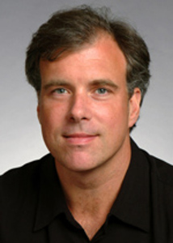

Keynote Speakers
-
Vittorio Ferrari (University of Edinburgh, Google Zurich)
Vitto is a Professor at the School of Informatics of the University of Edinburgh leading the CALVIN research group and currently also building a research group at Google Research Zurich. He received his PhD from ETH Zurich in 2004 and was a post-doctoral researcher at INRIA Grenoble in 2006-2007 and at the University of Oxford in 2007-2008. Between 2008 and 2012 he was Assistant Professor at ETH Zurich, funded by a Swiss National Science Foundation Professorship grant. He received the prestigious ERC Starting Grant, and the best paper award from the European Conference in Computer Vision, both in 2012. He is an Associate Editor of IEEE Pattern Analysis and Machine Intelligence and will be a Program Chair at ECCV 2018. -
 Sanja Fidler (University of Toronto, Canada)
Sanja Fidler (University of Toronto, Canada)
Sanja Fidler is an assistant professor at the University of Toronto. Previously, she has been a research assitant professor at the Toyota Technological Institute at Chicago as as a PostDoc in Sven Dickinson's group in Toronto. Her research interests are in 2D and 3D object detection as well as in the interplay between language and vision: generating sentential descriptions about complex scenes, as well as using textual descriptions for better scene parsing. -

Trevor Darrell (University of California, Berkeley)
Trevor is on the faculty of the CS Division of the EECS Department at UC Berkeley. He leads Berkeley’s DeepDrive Industrial Consortia, is co-Director of the Berkeley Artificial Intelligence Research (BAIR) lab, and is Faculty Director of PATH at UC Berkeley. Trevor’s group develops algorithms for large-scale perceptual learning, including object and activity recognition and detection. Trevor was on the faculty of the MIT EECS department from 1999-2008, where he directed the Vision Interface Group. He was a member of the research staff at Interval Research Corporation from 1996-1999, and received the S.M., and PhD. degrees from MIT in 1992 and 1996, respectively. - Abstract: Learning of layered or "deep" representations has provided significant advances in computer vision in recent years, but has traditionally been limited to fully supervised settings with very large amounts of training data. New results in adversarial adaptive representation learning show how such methods can also excel when learning in sparse/weakly labeled settings across modalities and domains. I'll also describe recent results on learning representations in a reinforcement learning setting, incorporating self-supervision losses and curiosity driven exploration into traditional reward-based optimization. As time permits, I'll present recent long-term recurrent network models that learn cross-modal description and explanation, visuomotor robotic policies that adapt to new domains, and deep autonomous driving policies that can be learned from heterogeneous large-scale dashcam video datasets.
-
Raia Hadsell (Google DeepMind, London)
Raia Hadsell, a senior research scientist at Google DeepMind, has worked on deep learning and robotics problems for over 10 years. Her thesis on Vision for Mobile Robots won the Best Dissertation award from New York University, and was followed by a post-doc at Carnegie Mellon’s Robotics Institute. Raia then worked as a senior scientist and tech manager at SRI International. Raia joined DeepMind in 2014, where she leads a research team studying robot navigation and lifelong learning. - Abstract: Continual learning is an important problem for reinforcement learning, because RL agents are trained sequentially, in interactive environments, and are especially vulnerable to the phenomena of catastrophic forgetting and catastrophic interference. Successful methods for continual learning have broad potential, because they could enable agents to learn multiple skills, potentially enabling complex behaviors. I will describe continual learning methods for such agents.
- Dealing with partially unknown, open, or dynamically increasing label spaces (probabilistic models, possibility for rejection, novelty detection, etc.)
- Continuous, online, and incremental learning (at level of instances, classes, common-sense knowledge, and representations)
- Active acquisition and annotation of new data with humans in the loop (curriculum learning, active learning, etc.)
- Transfer learning and domain adaptation in continuous and open-set learning scenarios
- Active data discovery in explorative data science and large-scale microscopy data
- Benchmarking success in continuous and open-set learning scenarios
Program
| 08:30am - 08:40am |
Welcome and Introduction
|
| 08:40am - 09:20am |
Raia Hadsell "Deep Reinforcement Learning in Sequential Environments"
|
| 09:20am - 10:00am |
Trevor Darrell "Adaptive Representation Learning for Perception, Action, and Explanation"
|
| 10:00am - 10:30am |
Refreshment Break with Poster Session (Poster)
|
| 10:30am - 11:10am |
Research Teaser Talks Session 1 (Teaser-S1)
|
| 11:10am - 11:50am |
Vittorio Ferrari "Towards continuous learning of object class detectors"
|
| 12:00am - 02:20pm |
Lunch Break
|
| 02:20pm - 03:00pm |
Research Teaser Talks Session 2 (Teaser-S2)
|
| 03:00pm - 03:40pm |
Invited talk by Sanja Fidler
|
| 03:40pm - 04:15pm |
Refreshment Break with Poster Session (Poster)
|
| 04:15pm - 05:00pm |
Panel Discussion
|
| 05:00pm |
Concluding Remarks
|
Accepted Presentations
| Yongqin Xian and Bernt Schiele and Zeynep Akata | "Zero-Shot Learning - The Good, the Bad and the Ugly" abstract | Teaser-S1, Poster |
| Sujoy Paul, Jawadul H. Bappy, and Amit Roy-Chowdhury | "Non-Uniform Subset Selection for Active Learning in Structured Data" full paper | Teaser-S1, Poster |
| Yu-Xiong Wang and Deva Ramanan and Martial Hebert | "Growing a Brain: Fine-tuning by Increasing Model Capacity" full paper | Teaser-S1, Poster |
| Rahaf Aljundi and Tinne Tuytelaars | "Continual learning with hebbian synapses" abstract | Teaser-S1, Poster |
| Kai Chen and Hang Song and Chen Change Loy and Dahua Lin | "Discover and Learn New Objects from Documentaries" project page | Teaser-S2, Poster |
| Manikandasriram S.R. and Cyrus Anderson and Ram Vasudevan and Matthew Johnson-Roberson | "Failing to learn: Autonomously Identifying Perception Failures for Self-driving Cars" full paper | Teaser-S2, Poster |
| Yizhou Yu and Weifeng Ge | "Borrowing Treasures from the Wealthy: Deep Transfer Learning through Selective Joint Fine-Tuning" full paper | Teaser-S2, Poster |
| Maggie Wigness and Douglas Summers-Stay | "Continuous and Open-Set Learning for Intelligent Systems Used in Military Relevant Environments" abstract | Poster |
| Jason Owens and Philip Osteen | "Adaptive Perception Processes for Learning from Experience" abstract | Poster |
| Judy Hoffman and Dequan Wang and Fisher Yu and Trevor Darrell | "FCNs in the Wild: Pixel-level Adversarial and Constraint-based Adaptation" full paper | Poster |
| Jiseob Kim and Byoung-Tak Zhang | "Talking to Teach a Personal Service Robot to Get Acquainted with the Dynamically Changing Environment" abstract | Poster |
| Xin Li and Fuxin Li | "Adversarial Examples Detection in Deep Networks with Convolutional Filter Statistics" abstract | Poster |
| David Krueger and Tegan Maharaj | "Reserve output units for deep open-set learning" abstract | Poster |
| Jonas Jaeger and Viviane Wolff and Klaus Fricke-Neuderth and Gereon Reus and Joachim Denzler | "A Generic Architecture for Lifelong Learning Portals" abstract | Poster |
| Clemens-Alexander Brust and Christoph Kaeding and Joachim Denzler | "Active Learning for Deep Object Detection" abstract | Poster |
| Ethan M. Rudd and Lalit P. Jain and Walter J. Scheirer and Terrance E. Boult | "The Extreme Value Machine" full paper | Poster |
Call for Abstracts and Participation
Recent breakthroughs in our community have relied on the availability of large representative datasets for training. However, the implicit assumption imposed in the majority of our today’s techniques is a static closed world, i.e., non-varying distributions for a fixed set of categories and tasks. Intuitively, these assumptions rarely hold in many application areas such as concept detection in biomedical image analysis, explorative data-driven science, scene parsing for autonomous driving, or household robotics. Instead, the set of semantic concepts and relevant tasks is dynamically changing - even on a daily basis. The assumption of a closed and static world is therefore one of the major obstacles when building intelligent systems that learn continuously, adaptively, and actively.
In general, this workshop tries to bridge one of the gaps between computer vision research and AI goals by focusing on different aspects of continuous and open-set learning. In consequence, the following topics will be central to the workshop:
We invite abstract submissions of 1-page in general following the CVPR17 format.
Submission site: https://goo.gl/forms/m8OWAp3clVCPc6uF2
Deadline: 31st of May 2017
The abstract will not appear in any proceedings and if accepted only appear online on this page (if authors like). Our workshop is not meant as a publication venue, but rather a real meeting, where you learn about people interested in the same area and find the next cooperation partners for your future project.
Accepted abstracts will be presented in a quick talk and a poster. We also welcome submissions of industrial partners interested in the topic and willing to present their application area. Furthermore, if you want to present your next proposal idea and you are looking for cooperation partners, you are also very much invited to submit an abstract.